7 月 21 日：AV-JEPA 等视觉表征主线更新
本期聚焦通用视觉表征、视觉语言预训练与视频自监督中最值得跟进的论文，并保留 CCF A/B、OpenReview 与 arXiv 状态线索。
先读 AV-JEPA，因为它把 JEPA 式 latent prediction 扩到 audio-visual 场景，并刻意保持无 decoder、无 EMA teacher、无 contrastive negatives 的简洁结构，最贴近“自监督目标如何扩展”的主线。随后读 Distributional Matching for Vector Quantization，它讨论 visual representation learning 和 autoregressive visual models 共同依赖的 VQ codebook 稳定性，可和 RAE/视觉 tokenizer 论文连读。第二轮读 Ask Twice, Look Twice、How Do VLMs Fail 与 MOON：这三篇分别从 prompt 顺序、operation-level failure 和 unit-sphere feature mixture 解释 VLM 表征/推理失效。最后读 AV-Flamingo、DAFS、MotionForesight 和 MDND，它们偏长视频系统、测试时帧选择、视频模型物理先验迁移和无监督对应；IoUPD、OP-HRG、MLLM-DataEngine 与 VPR token reduction 扫读即可。
论文索引
| 优先级 | 论文 | 类型 | 相关性 | 一句话理由 |
|---|---|---|---|---|
| P0 | AV-JEPA: Extending LeJEPA to Audio-Visual Self-Supervised Learning | arXiv new/cross; audio-visual JEPA SSL | 高 | 用 early-fusion ViT、modality dropout masking 和 SIGReg，把 JEPA 扩展到音视频 latent 对齐，同时保持无 decoder/无负样本的简洁自监督结构。 |
| P0 | Distributional Matching for Vector Quantization: A Unified Theoretical and Empirical Framework | arXiv new; visual tokenizer / VQ representation | 高 | 把 VQ 训练不稳定与 codebook collapse 归因于 feature/code distribution mismatch，对视觉 tokenizer、AR 图像模型和离散表征学习都有底层价值。 |
| P1 | Ask Twice, Look Twice: Prompt Echoing Resolves the Question-First Paradox in Vision-Language Models | arXiv new/cross; VLM prompt/attention mechanism | 中高 | 解释 question-first prompt 为什么会损伤 VLM：问题能引导图像 patch 表征，却在 answer token 处被读不到；echoing 是训练无关修复。 |
| P1 | How Do VLMs Fail? Vision-Operation Misalignment in Compositional VQA | arXiv new; ACM MM 2026; VLM failure mechanism | 中高 | 把 compositional VQA 失败拆成 grounding、reasoning、attribute extraction、language prior 四类，并定位到不同 transformer pathway。 |
| P1 | Von Mises-Fisher Mixture Model with Dynamic Shrinkage for Realistic Test-Time Transduction | arXiv new; ICML 2026; VLM test-time adaptation | 中高 | 把 CLIP/VLM 单位球特征建模为 vMF mixture，用动态 shrinkage 处理长尾/不均衡测试集，属于训练无关表征校准。 |
| P2 | Audio-Visual Flamingo: Open Audio-Visual Intelligence for Long and Complex Videos | arXiv cross; open long audio-visual MLLM | 中高 | 开放长音视频数据、三阶段课程和时间戳 grounding CoT，适合看视频/音频/图像联合表征的工程化路线。 |
| P2 | Efficient Frame Selection for Long Videos at Test Time with Attention-Based MLLM Selectors | arXiv new; training-free long-video frame selection | 中高 | 直接利用 MLLM 中间层 cross-modal attention 做 query-relevant frame evidence，不经生成即可压缩长视频 token。 |
| P2 | MotionForesight: Re-purposing Video Models for Future 3D Scene-Flow Prediction | arXiv new; video priors to 3D motion forecasting | 中高 | 冻结大型视频/跟踪组件，只训练轻量 adapter，把视频预测模型中的物理运动先验迁移到未来 3D scene flow。 |
| P2 | MDND: Unsupervised Learning Guided by Non-Differentiable Refinement for Shape Correspondence | arXiv new; AAAI 2026 supplementary complete version | 中 | 用非可微 refinement branch 生成高质量内部目标，再监督可微 branch，无监督学习形状 correspondence。 |
| P2 | IoUPD: IoU-Aware Privileged Distillation for Visual Grounding with Multimodal Large Language Models | arXiv new; privileged distillation for MLLM grounding | 中 | 用带 box 标注的教师分支提供训练时 privileged guidance，把 token-level 坐标生成和 IoU 几何质量对齐。 |
| P3 | Reasoning-Guided Part-Level Visual Grounding via Reinforcement Learning | arXiv new/cross; ECCV 2026; part grounding RL | 中 | 用 object-part hierarchy、self-check crop re-encoding 和 part-aware GRPO 改善 MLLM 细粒度 grounding，偏任务但可迁移到局部视觉表征。 |
| P3 | MLLM-DataEngine: Closing the Loop of Multimodal Instruction Tuning Data Generation | arXiv new/cross; ICME 2026; MLLM data engine | 中 | 让评测 bad cases 反向驱动增量多模态指令数据生成，是 VLM 训练数据闭环的一种工程模板。 |
| 扫读 | Are All Tokens Necessary for Visual Place Recognition? An Empirical Study of Token Reduction for Efficient Inference | arXiv new; ViT/foundation-model token reduction | 中 | 任务是 VPR，但系统评测 token pruning/merging 对 ViT/VFM 检索性能和吞吐的影响，可作视觉 token 效率背景。 |
主线阅读
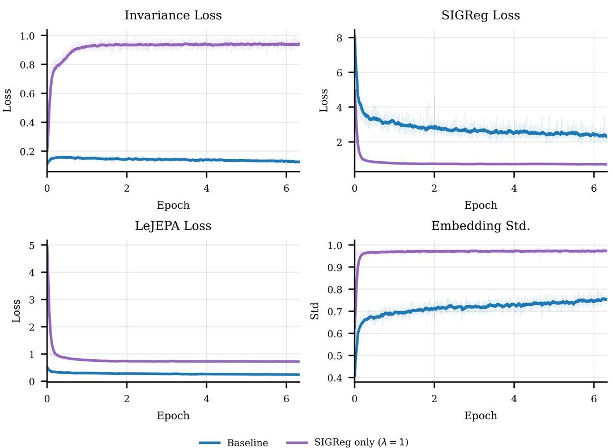
AV-JEPA: Extending LeJEPA to Audio-Visual Self-Supervised Learning
高相关；详见方法、贡献和实验边界。
方法：用 early-fusion ViT、modality dropout masking 和 SIGReg，把 JEPA 扩展到音视频 latent 对齐，同时保持无 decoder/无负样本的简洁自监督结构
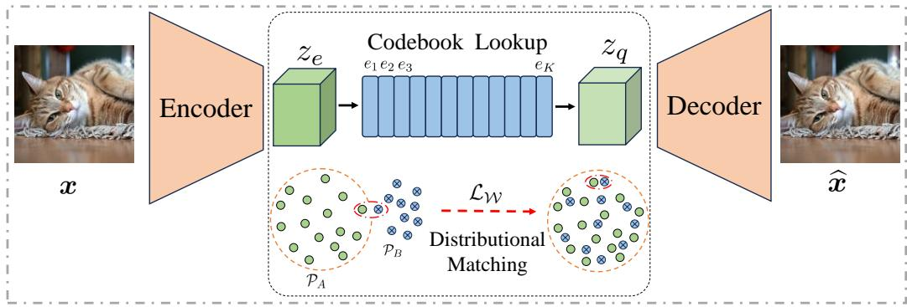
Distributional Matching for Vector Quantization: A Unified Theoretical and Empirical Framework
高相关；详见方法、贡献和实验边界。
方法：把 VQ 训练不稳定与 codebook collapse 归因于 feature/code distribution mismatch，对视觉 tokenizer、AR 图像模型和离散表征学习都有底层价值
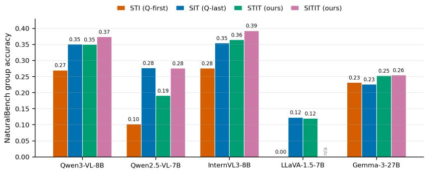
Ask Twice, Look Twice: Prompt Echoing Resolves the Question-First Paradox in Vision-Language Models
中高相关；详见方法、贡献和实验边界。
方法：解释 question-first prompt 为什么会损伤 VLM：问题能引导图像 patch 表征，却在 answer token 处被读不到；echoing 是训练无关修复
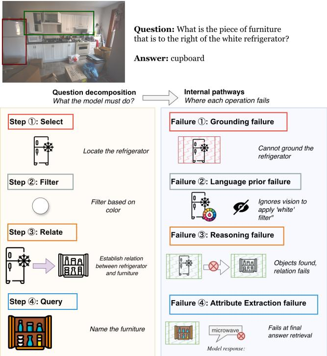
How Do VLMs Fail? Vision-Operation Misalignment in Compositional VQA
中高相关；详见方法、贡献和实验边界。
方法：把 compositional VQA 失败拆成 grounding、reasoning、attribute extraction、language prior 四类，并定位到不同 transformer pathway
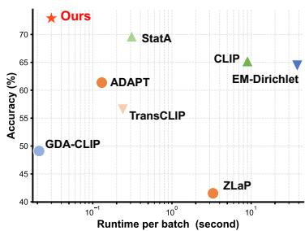
Von Mises-Fisher Mixture Model with Dynamic Shrinkage for Realistic Test-Time Transduction
中高相关；详见方法、贡献和实验边界。
方法：把 CLIP/VLM 单位球特征建模为 vMF mixture，用动态 shrinkage 处理长尾/不均衡测试集，属于训练无关表征校准
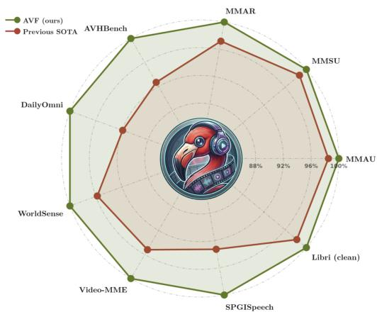
Audio-Visual Flamingo: Open Audio-Visual Intelligence for Long and Complex Videos
中高相关；详见方法、贡献和实验边界。
方法：开放长音视频数据、三阶段课程和时间戳 grounding CoT，适合看视频/音频/图像联合表征的工程化路线
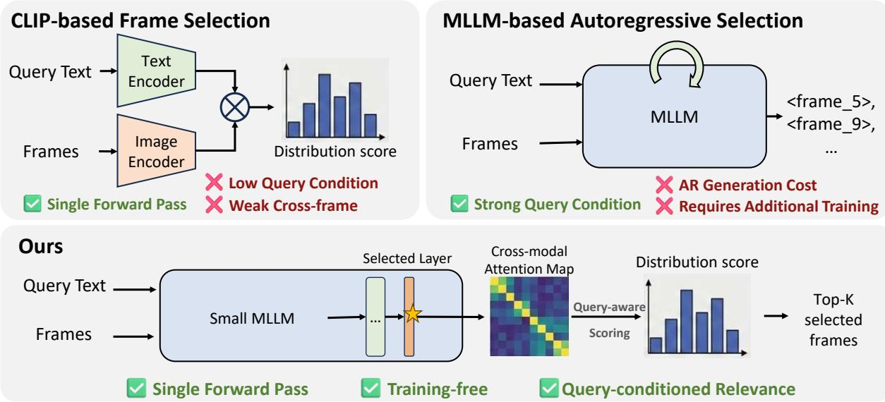
Efficient Frame Selection for Long Videos at Test Time with Attention-Based MLLM Selectors
中高相关；详见方法、贡献和实验边界。
方法：直接利用 MLLM 中间层 cross-modal attention 做 query-relevant frame evidence，不经生成即可压缩长视频 token
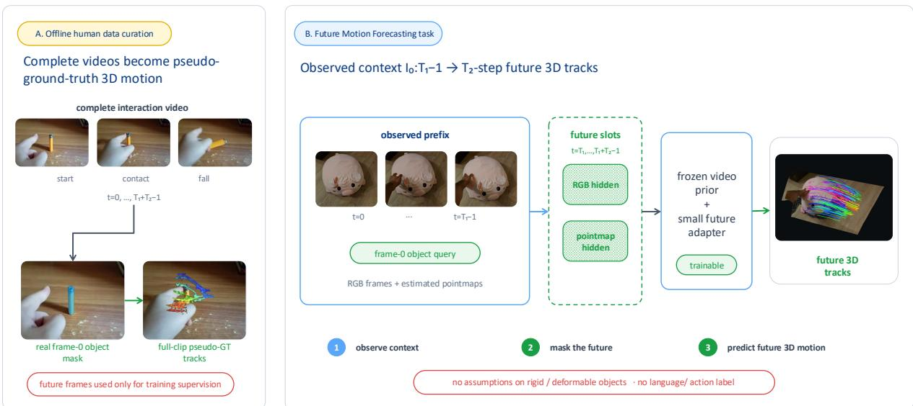
MotionForesight: Re-purposing Video Models for Future 3D Scene-Flow Prediction
中高相关；详见方法、贡献和实验边界。
方法：冻结大型视频/跟踪组件，只训练轻量 adapter，把视频预测模型中的物理运动先验迁移到未来 3D scene flow
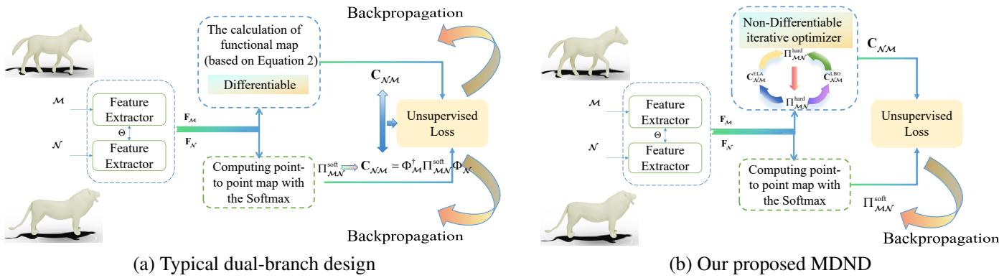
MDND: Unsupervised Learning Guided by Non-Differentiable Refinement for Shape Correspondence
中相关；详见方法、贡献和实验边界。
方法：用非可微 refinement branch 生成高质量内部目标，再监督可微 branch，无监督学习形状 correspondence
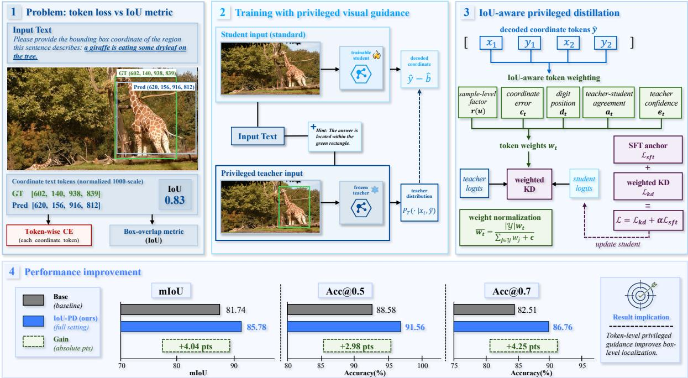
IoUPD: IoU-Aware Privileged Distillation for Visual Grounding with Multimodal Large Language Models
中相关；详见方法、贡献和实验边界。
方法：用带 box 标注的教师分支提供训练时 privileged guidance，把 token-level 坐标生成和 IoU 几何质量对齐
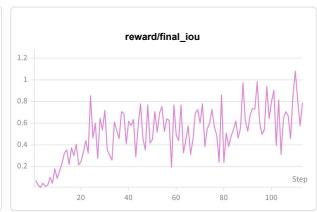
Reasoning-Guided Part-Level Visual Grounding via Reinforcement Learning
中相关；详见方法、贡献和实验边界。
方法：用 object-part hierarchy、self-check crop re-encoding 和 part-aware GRPO 改善 MLLM 细粒度 grounding，偏任务但可迁移到局部视觉表征
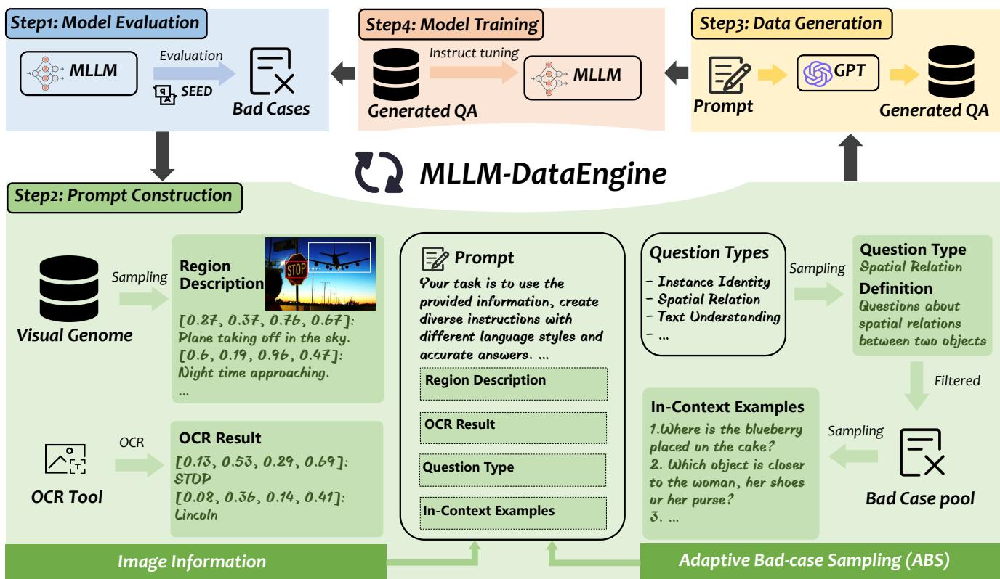
MLLM-DataEngine: Closing the Loop of Multimodal Instruction Tuning Data Generation
中相关；详见方法、贡献和实验边界。
方法：让评测 bad cases 反向驱动增量多模态指令数据生成，是 VLM 训练数据闭环的一种工程模板
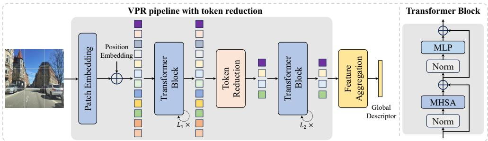
Are All Tokens Necessary for Visual Place Recognition? An Empirical Study of Token Reduction for Efficient Inference
中相关；详见方法、贡献和实验边界。
方法：任务是 VPR，但系统评测 token pruning/merging 对 ViT/VFM 检索性能和吞吐的影响，可作视觉 token 效率背景